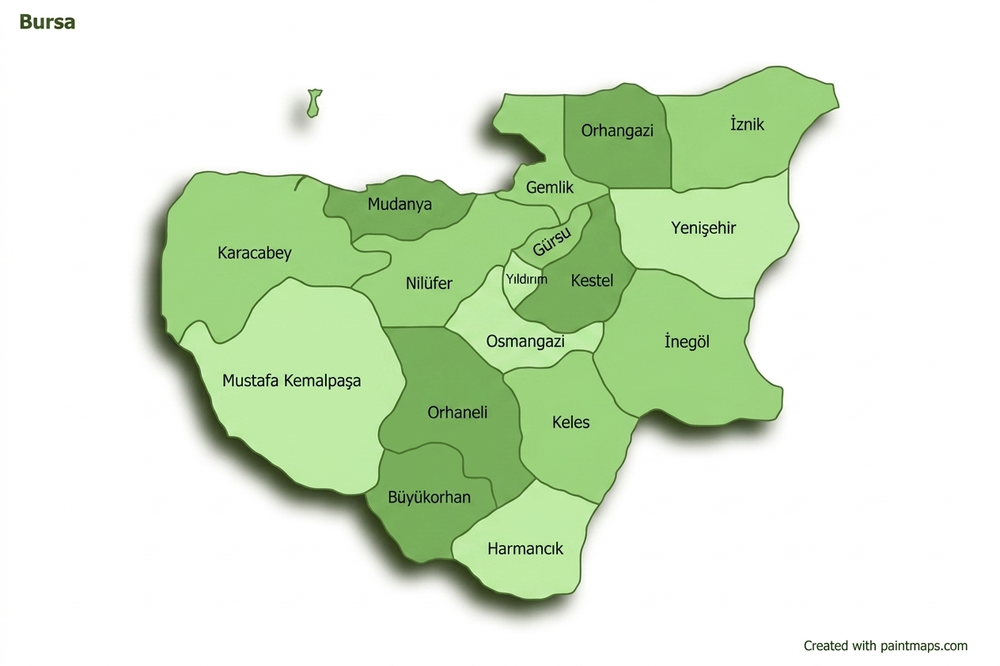

Bursa'ya Hoş Geldiniz
Bursa; Osmanlı İmparatorluğu'nun ilk başkenti, ipek ve dut bahçelerinin şehri, Uludağ'ın eteklerinde kurulu bu eşsiz kent, tarihi dokusuyla ve doğal zenginliğiyle her yıl milyonlarca ziyaretçiyi ağırlamaktadır.
🗺️ Bursa İlçe Haritası
Solda haritayı inceleyin; sağ panelden bir ilçe seçin. Seçimin ardından özeti ve Genel · Tarih · Gezilecek Yerler sekmelerini sayfanın altındaki kartta bulabilirsiniz.

Etkileşimli seçim
İlçe listesi
17